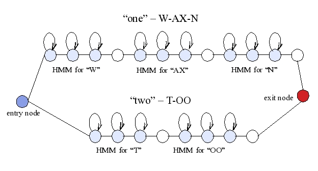
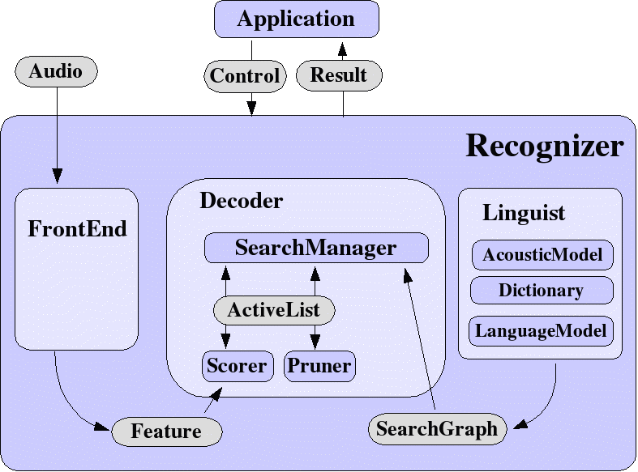

Sphinx-4 contains a number of demo programs. If you downloaded the
binary distribution (sphinx4-{version}-bin.zip), the JAR files of the demos
are already built, so you can just run them directly. However, if you
downloaded the source distribution (sphinx4-{version}-src.zip or via CVS),
you need to build the demos. Click on the links below for instructions on
how to build and run the demos.
- Understanding Sphinx-4
Configuration Management
The document Sphinx-4
Configuration Management describes, in detail, how to configure a
Sphinx-4 system.
- Understanding Sphinx-4
Instrumentation
The document
Sphinx-4 Instrumentation describes, in detail, how to use the
instrumentation facilities of the Sphinx-4 system.
- Running the Regression Tests
Sphinx-4 contains a number of regression tests using common speech databases.
Again, you have to download the source distribution or downloaded the
source tree using CVS in order to get the regression tests directory.
The regression tests we have are:
Before you run any of the tests, make sure that you have built Sphinx-4
already. To do so, go to the top level and type:
ant
You also need to make sure you have the appropriate acoustic model(s)
installed. More details below.
The Sphinx-4 regression tests have different directories for the
different tasks. The directory sphinx4/tests/performance contains
directories named ti46, tidigits, an4, rm1, hub4, and some other tests.
Each of these directories contains a build.xml with targets specific
to the particular task. The build.xml allows you to run a number of
different tests. Type:
ant -projecthelp
to list a help text with the possible targets.
Isolated Digits - TI46
The TIDIGITS models are already included as part of the distribution.
Therefore, you do not need to download them separately.
You must have the TI46 test data, available from the
LDC TI46 website.
You need to edit the batch file called ti46.batch,
located in tests/performance/ti46 directory.
You will need to change it such that
it matches where you stored the TI46 test files. Refer to the section
Batch Files for detail about the format of
batch files.
To run the tests:
% cd sphinx4/tests/performance/ti46
% ant -projecthelp # to see a list of possible targets
% ant ti46_wordlist
Connected Digits - TIDIGITS
The TIDIGITS models are already included as part of the distribution.
Therefore, you do not need to download them separately.
You must have the TIDIGITS test data, available from the
LDC TIDIGITS website.
You need to edit the batch file called tidigits.batch,
located in the tests/performance/tidigits directory.
You will need to change it such that
it matches where you stored the TIDIGITS test files. Refer to the section
Batch Files for detail about the format of
batch files.
To run the tests:
% cd sphinx4/tests/performance/tidigits
% ant -projecthelp # to see a list of possible targets
% ant tidigits_flat_unigram
Small Vocabulary - AN4
The Wall Street Journal (WSJ) models are already included as part of
the distribution. Therefore, you do not need to download them separately.
Download the big endian raw audio format of the
AN4 Database.
Unpack it at a directory of your choice:
% gunzip an4_raw.bigendian.tar.gz
% tar -xvf an4_raw.bigendian.tar
Then update the following batch files (located in the
tests/performance/an4
directory), so that they match up with where you unpacked the AN4 data.
You probably just need to replace all instances of the string
"/lab/speech/sphinx4/data" inside these batch files.
Please refer to the Batch Files section for
details about batch files:
an4_full.batch
an4_spelling.batch
an4_words.batch
After you have updated the batch files, you can run the tests by:
% cd sphinx4/tests/performance/an4
% ant -projecthelp # to see a list of possible targets
% ant an4_words_unigram
Medium Vocabulary - RM1
Make sure that you have downloaded the binary RM1 model file, called
RM1_13dCep_16k_40mel_130Hz_6800Hz.jar, located at the
sphinx4 package in the downloads page.
Then in the build file for the RM1 tests,
sphinx4/tests/performance/rm1/build.xml,
changed the classpath property of the build file to point to
the location of your RM1_13dCep_16k_40mel_130Hz_6800Hz.jar.
You must have the RM1 test data, available from the
LDC RM1 website.
You also need to prepare a batch file called rm1.batch,
by following instructions in the Batch Files
section. There is already one in the RM1 test directory, but it will
not work for you, since the paths to test files will not match your setup.
To run the tests:
% cd sphinx4/tests/performance/rm1
% ant -projecthelp # to see a list of possible targets
% ant rm1_bigram
Large Vocabulary - HUB4
You must have the HUB4 test data, available from the
LDC HUB4 website.
You must download the binary HUB4 model file, called
HUB4_8gau_13dCep_16k_40mel_133Hz_6855Hz.jar, and the
binary HUB4 trigram language model, called HUB4_trigram_lm.zip,
both located at the sphinx4 package in the
downloads page. For the trigram language model file, unpack it by:
jar xvf HUB4_trigram_lm.zip
The trigram model file is called language_model.arpaformat.DMP.
Then, in the build file for the HUB4 tests,
sphinx4/tests/performance/hub4/build.xml,
changed the classpath property of the build file to
point to the location of your
HUB4_8gau_13dCep_16k_40mel_133Hz_6855Hz.jar.
In the configuration file,
tests/performance/hub4/hub4.config.xml, change the 'location'
of the 'trigramModel' component to where your
language_model.arpaformat.DMP
file is located.
You also need to prepare a batch file, which is currently called
f0_hub4.batch in the build.xml file, by following instructions
in the Batch Files section.
To run the test:
% cd sphinx4/tests/performance/hub4
% ant -projecthelp # to see a list of possible targets
% ant hub4_trigram
- Setting up a Regression Test
Each batch mode regression test consists of the following components:
- Test data - the audio or cepstral data to
perform the test on. This is usually some well known database such as
TIDIGITS or HUB-4. Alternatively, it can also be data that you recorded on
your own.
- Batch File - this text file lists the location
of all the test files, as well as the transcription of the test file.
- Acoustic model & Dictionary
- Configuration file - specifies the configuration of the system you use to
test the data.
- Grammar file - this can either be a word list file, N-gram language
model, or a BNF-style grammar file (such as JSGF).
-
Batch-mode Recognizer - this is the Sphinx-4 batch-mode recognizer.
To learn about how to setup a regression test, take a look at the
walkthrough of setting up the AN4 tests.
Batch Files
Batch files are used in batch mode regressions tests. It is a text
file that contains the list of files to be processed, with the
transcription for each file. The format is as shown below: one line
for each file, where the first element in a line is the file name,
which can be an absolute or relative path, and includes the file
extension; after the file name, the words that make up the
transcription for the audio. Sphinx-4 uses the transcription provided
here to compute the system's accuracy after each sentence is
processed. An utterance's processing produces in a hypothesis for what
was said. This hypothesis is compared with the transcription, i.e.,
the hypothesis is aligned against the reference transcript, and a
summary of the results is reported.
/lab/speech/sphinx4/data/tidigits/test/raw16k/man/man.ah.24z982za.raw two four zero nine eight two zero
/lab/speech/sphinx4/data/tidigits/test/raw16k/man/man.ah.25896o4a.raw two five eight nine six oh four
An example batch file is
tidigits.batch
(this link only works if you downloaded the source distribution).
Input Audio/Cepstral Files
The audio files used by Sphinx-4 can contain raw audio or cepstra,
which is a form of encoded speech. The Java platform has support for
other data formats, such as MS WAV or Sun's au, but, provided as is,
Sphinx-4 can handle only raw data.
The audio defaults to 2 bytes/sample, at 16000 samples per second. The
files are expected to be binaries without header. The Java platform
assumes big endian order, always. These defaults can be changed. For
example, the byte order or the sampling rate can be changed.
The input can also be cepstra. The cepstral file has a 4 byte integer
containing the number of floats that follow. The following floats are
13 dimensional vectors concatenated. Notice that since the first piece
of information is the number of floats, the total file size can be
computed. If a comparisons with the actual size fails, either the byte
order has to be reversed, or the file is corrupted. Importantly, the
byte order can be automatically detected.
Walkthrough of Setting up the AN4 Tests
To illustrate the process of setting up a regression test, lets use AN4,
an existing test, as an example. Use the following steps to create
the AN4 tests.
- Create a test directory - the various files for each test set
(e.g., config file, batch file, grammar files, etc..) should reside
in its own directory, normally under
tests/performance.
For example, the AN4 tests reside in tests/performance/an4.
- Obtain and convert the test database - download the AN4 test
database from the
AN4 website (choose "Raw audio (.raw) format, big endian byte order").
Unpack the downloaded tarball into a directory of your choice,
which in our case is
/lab/speech/sphinx4/data/an4.
Since the AN4 test data
already comes in raw audio format, no conversion is necessary.
However, other test databases might require conversion to raw audio.
For example, the TIDIGITS test files are in SPHERE format, so it is
necessary to convert them to raw audio format before it can be read by
the Sphinx-4 front end. This is usually accomplished by using the
program sox on UNIX platforms.
- Create a batch file - a test database usually contains a
transcript (i.e., the actual text of the speech data) of all the
test files. Using the transcript file, create a
batch file,
listing the location of the test files and their corresponding transcript.
For example, our
tests/performance/an4/an4_full.batch
file looks like:
/lab/speech/sphinx4/data/an4/an4_clstk/fash/an251-fash-b.raw yes
/lab/speech/sphinx4/data/an4/an4_clstk/fash/an253-fash-b.raw go
/lab/speech/sphinx4/data/an4/an4_clstk/fash/an254-fash-b.raw yes
/lab/speech/sphinx4/data/an4/an4_clstk/fash/an255-fash-b.raw u m n y h six
...
All batch files should reside in the test directory, in this case
tests/performance/an4.
- Acoustic model & Dictionary - use the Wall Street Journal (WSJ)
models for the AN4 test, which is already included as a JAR file
in the binary distribution (sphinx4-{version}-bin.zip). If you downloaded
the source distribution, building it by running
ant
at the top level directory will create the JAR file for the WSJ model.
The JAR file should be included in the classpath of the application
you are deploying. In this case, the WSJ JAR file
(lib/WSJ_8gau_13dCep_16k_40mel_130Hz_6800Hz.jar) is included
in the java command line inside the build.xml run file. We also need
to specify in the config file (see the next item below)
the acoustic model class we are using, which in this case is
edu.cmu.sphinx.model.acoustic.WSJ_8gau_13dCep_16k_40mel_130Hz_6800Hz
. The dictionary is also specified in the config file using
the resource mechanism of Sphinx-4.
- Creating the config file & grammar files -
In order to create your own configuration file, you must first understand
the Sphinx-4 configuration management system.
The AN4 config file is
tests/performance/an4/an4.config.xml, please take a look
at it. This file describes how the batch-mode recognizer and
its various sub-components should be configured. Note that this
file also contains configurations for the live-mode recognizer,
which is not the subject of interest of this walkthrough.
In the following we will refer to components in the config file
using highlights.
In an4.config.xml, the batch-mode recognizer is called batch.
It uses the Recognizer called wordRecognizer,
which contains the decoder, as well as
various monitors that keeps track of recognition accuracy, speed, and
memory. The decoder contains the searchManager,
which in turn contains the linguist, the pruner,
the scorer, and the activeList.
Refer to the Javadoc (go to bottom
of the page) for a description of each of these components.
The linguist used is the flatLinguist,
and the grammar of the flatLinguist is either the
wordListGrammar, which is a file with a list of words, e.g.,
AND
APOSTROPHE
APRIL
AREA
AUGUST
CODE
the lmGrammar (i.e., N-gram language model), or
fstGrammar (i.e., finite state tranducer grammar).
The lmGrammar uses a language model file (text-based for AN4)
generated by the CMU
Statistical Language Modeling (SLM) Toolkit.
The flatLinguist also
specifies the acoustic model used, and in this case it is the WSJ models.
The location and format of the WSJ model, as well as the location of
the various files in the model, are also specified.
The scorer contains the front end,
which is called mfcFrontEnd since it produces MFCC features.
- Creating a build.xml for Ant - a file called
build.xml
is necessary to run Ant. This file is the Ant version of the Makefile
in Make. All Ant targets are listed in this file.
For details on how to write this file, refer to the documentation
at http://ant.apache.org/.
Lets use the first Ant target, an4_words_wordlist, as an
example. This Ant target invokes the java command
on the class edu.cmu.sphinx.tools.batch.BatchModeRecognizer.
This class takes a configuration file (an4.config.xml)
and a batch file (an4_words.batch) as arguments.
This class looks for the component named batch
in the configuration file. The configuration manager will create this
component (and its subcomponents). Therefore, the component
edu.cmu.sphinx.tools.batch.BatchModeRecognizer should always
be named "batch" in the config.xml file.
Other AN4 Ant targets are created similarly.
- Setup Complete - At this point, we have completed the setup
of the AN4 tests. You can now run the AN4 tests by following instructions
in small vocabulary tests.
- Acoustic Models
The two main acoustic models that are used by Sphinx-4, TIDIGITS and
Wall Street Journal, are already included in the "lib"
directory of the binary distribution. For the source distribution, you will
build it when you type ant at the top level directory.
Our regression tests also uses the RM1 and HUB4 models,
which are available for download separately on the download page.
Sphinx-4 can handle model packages provided as a jar file.
Each acoustic model implements the
AcousticModel interface. For example, the WSJ models are wrapped by
a class called edu.cmu.sphinx.model.acoustic.WSJ_8gau_13dCep_16k_40mel_130Hz_6800Hz, which implements the AcousticModel interface.
This implementation class is in the JAR file of the models, together
with the actual data files of the model. This way, two simple steps are
need to use a particular acoustic model:
- Include the JAR file in your classpath.
- Specify the model implementation class in the config file.
You can find out the model implementation class of a JAR file using the
java -jar command. For example, you can find out the model
class of the WSJ model by:
sphinx4>java -jar lib/WSJ_8gau_13dCep_16k_40mel_130Hz_6800Hz.jar
Wall Street Journal acoustic models
Class: edu.cmu.sphinx.model.acoustic.WSJ_8gau_13dCep_16k_40mel_130Hz_6800Hz
Is Binary: true
Sparse Form: false
Filters: 40
Vector Length: 39
Gaussians: 8
Model Definition: etc/WSJ_clean_13dCep_16k_40mel_130Hz_6800Hz.4000.mdef
Data Location: cd_continuous_8gau
Feature Type: cepstra_delta_doubledelta
Sample Rate: 16000
Description: Wall Street Journal acoustic models
Number Fft Points: 512
Max Freq: 6800
Min Freq.: 130
The print out also includes details about how the model was trained, but
this is not important for the average user.
- Language Models
The language model used by Sphinx-4 follows the ARPA
format. Language models provided with the acoustic model packages were
created with the Carnegie Mellon University Statistical Language
Modeling toolkit (CMU SLM toolkit), available at CMU. A manual
is available there.
The language model is created from a list of transcriptions. Given
a file with training transcription, the following script
creates a list of words that appear in the transcriptions, then
creates a bigram and a trigram LM files in the ARPA format. The file with extension ccs contains the context cues, and it is usually a list of words used as markers - beginning or end of speech etc.
set task = RM
# Location of the CMU SLM toolkit
set bindir = ~/src/CMU-SLM_Toolkit_v2/bin
cat $task.transcript | $bindir/text2wfreq | $bindir/wfreq2vocab > $task.vocab
set mode = "-absolute"
# Create bigram
cat $task.transcript | $bindir/text2idngram -n 2 -vocab $task.vocab | \
$bindir/idngram2lm $mode -context $task.ccs -n 2 -vocab $task.vocab \
-idngram - -arpa $task.bigram.arpa
# Create trigram
cat $task.transcript | $bindir/text2idngram -n 3 -vocab $task.vocab | \
$bindir/idngram2lm $mode -context $task.ccs -n 3 -vocab $task.vocab \
-idngram - -arpa $task.trigram.arpa
- BNF-Style Grammars
Sphinx-4 uses the Java Speech API Grammar Format (JSGF) to perform
speech recognition using a BNF-style grammar. Currently, you can only
use JSGF grammars with the FlatLinguist. To specify JSGF grammars,
set the following in the configuration file:
<component name="flatLinguist" type="edu.cmu.sphinx.linguist.flat.FlatLinguist">
<property name="grammar" value="jsgfGrammar">
// ... other properties ...
</component>
<component name="jsgfGrammar" type="edu.cmu.sphinx.jsapi.JSGFGrammar">
<property name="grammarLocation" value="...URL of grammar directory"/>
</component>
For information on how to write JSGF grammars, and how to
specify the location of your JSGF grammar file(s), and the limitations of
the current implementation of JSGF grammar, please refer to the
Javadocs for
JSGFGrammar.
-
Architecture and API
The Sphinx-4 API can be found in the
javadoc documentation.
If the previous is broken, please build the javadocs using the
instructions in Creating Javadocs.
In fact, rebuilding javadocs is something you should do every time
you change code in Sphinx-4.
In this section, we will provide an overview of Sphinx-4, starting with
an introduction of HMM-based recognizers. We will highlight in
red those keywords that are critical to
understanding Sphinx-4.
Overview of an HMM-based Speech Recognition System
Sphinx-4 is an HMM-based speech recognizer. HMM
stands for Hidden Markov Models, which is a type of statistical model.
In HMM-based speech recognizers,
each unit of sound (usually called a phoneme) is represented by a statistical
model that represents the distribution of all the evidence (data) for
that phoneme. This is called the acoustic model
for that phoneme. When creating an acoustic model,
the speech signals are first transformed into a sequence of vectors
that represent certain characteristics of the signal, and the
parameters of the acoustic model are then estimated using these vectors
(usually called features). This process is called
training the acoustic models.
During speech recognition, features are derived from the
incoming speech (we will use "speech" to mean the same thing as "audio")
in the same way as in the training process. The component of the recognizer
that generates these features is called the front end.
These live features are scored against the acoustic model.
The score obtained indicates how
likely that a particular set of features (extracted from live
audio) belongs to the phoneme of the corresponding acoustic model.
The process of speech recognition is to find the best possible sequence
of words (or units) that will fit the given input speech. It is a
search problem, and in the case of HMM-based
recognizers, a graph search problem. The graph represents all possible
sequences of phonemes in the entire language
of the task under consideration. The graph is typically
composed of the HMMs of sound units concatenated in a guided manner,
as specified by the grammar of the task.
As an example, lets look at a simple search graph that decodes the words
"one" and "two". It is composed of the HMMs of the sounds units of the
words "one" and "two":

Constructing the above graph requires knowledge from various sources.
It requires a dictionary, which maps the word
"one" to the phonemes W, AX and N, and the word "two" to T and OO.
It requires the acoustic model to obtain the HMMs for the phonemes
W, AX, N, T and OO. In Sphinx-4, the task of constructing this search graph
is done by the linguist.
Usually, the search graph also has information about how likely certain
words will occur. This information is supplied by the
language model. Suppose that, in our example,
the probability of someone saying "one" (e.g., 0.8) is much higher than
saying "two" (0.2). Then, in the above graph, the probability of the
transition between the entry node and the first node of the HMM for W
will be 0.8, while the probability of the transition between the entry
node and the first node of the HMM for T will be 0.2. The path to
"one" will consequently have a higher score.
Once this graph is constructed, the sequence of parametrized speech
signals (i.e., the features) is matched against different paths
through the graph to find the best fit.
The best fit is usually the least cost or highest
scoring path, depending on the implementation.
In Sphinx-4, the task of searching through the graph for the best path
is done by the search manager.
As you can see from the above graph, a lot of the nodes have self
transitions. This can lead to a very large number of possible paths
through the graph. As a result, finding the best possible path can
take a very long time. The purpose of the pruner
is to reduce the number of possible paths during the search,
using heuristics like pruning away the lowest scoring paths.
As we described earlier, the input speech signal is transformed into a
sequence of feature vectors. After the last feature vector is decoded,
we look at all the paths that have reached the final exit node
(the red node). The path with the highest score is the best fit, and a
result taking all the words of that path is returned.
In this section, we describe the main components of Sphinx-4, and how
they work together during the recognition process. First of all,
lets look at the architecture diagram of Sphinx-4. It contains almost
all the concepts (the words in red) that were introduced in the previous
section. There are a few additional concepts in the diagram,
which we will explain promptly.

When the recognizer starts up, it constructs the front end (which generates
features from speech), the decoder, and the linguist (which generates
the search graph) according to the configuration specified by the user.
These components will in turn construct their own subcomponents. For example,
the linguist will construct the acoustic model, the dictionary,
and the language model. It will use the knowledge from these three
components to construct a search graph that is appropriate for the task.
The decoder will construct the search manager,
which in turn constructs the scorer, the pruner, and the active list.
Most of these components represents interfaces. The search manager,
linguist, acoustic model, dictionary, language model, active list, scorer,
pruner, and search graph are all Java interfaces. There can
be different implementations of these interfaces. For example,
there are two different implementations of the search manager.
Then, how does the system know which implementation to use? It is specified
by the user via the configuration file, an XML-based file that is loaded
by the configuration manager. In this configuration
file, the user can also specify the properties
of the implementations. One example of a property is the sample rate
of the incoming speech data.
The active list is a component that requires
explanation. Remember we mentioned that there can be many possible paths
through the search graph. Sphinx-4 currently implements a
token-passing algorithm. Each time the search arrives
at the next state in the graph, a token is created. A token points to the
previous token, as well as the next state. The active list keeps track of
all the current active paths through the search graph by storing the last
token of each path. A token has the score of the path at that particular
point in the search. To perform pruning, we simply prune the tokens in the
active list.
When the application asks the recognizer to perform recognition,
the search manager will ask the scorer to score each token in the
active list against the next feature vector obtained from the front end.
This gives a new score for each of the active paths. The pruner will then
prune the tokens (i.e., active paths) using certain heuristics.
Each surviving paths will
then be expanded to the next states, where a new token will be created
for each next state. The process repeats itself until no more feature
vectors can be obtained from the front end for scoring. This usually
means that there
is no more input speech data. At that point, we look at all paths
that have reached the final exit state,
and return the highest scoring path as the result to the application.
The performance of Sphinx-4 critically depends on your task and how
you configured Sphinx-4 to suit your task. For example,
a large vocabulary task needs a different linguist than a small
vocabulary task. Your system has to be configured differently
for the two tasks. This section will not tell you the exact configuration
for different tasks, which will be dealt with later. Instead, this section
will introduce you to the configuration mechanism of Sphinx-4, which is
via an XML-based configuration file. Please click on the document
Sphinx-4 Configuration Management to learn how to do this.
It is important that you read this document before you proceed.